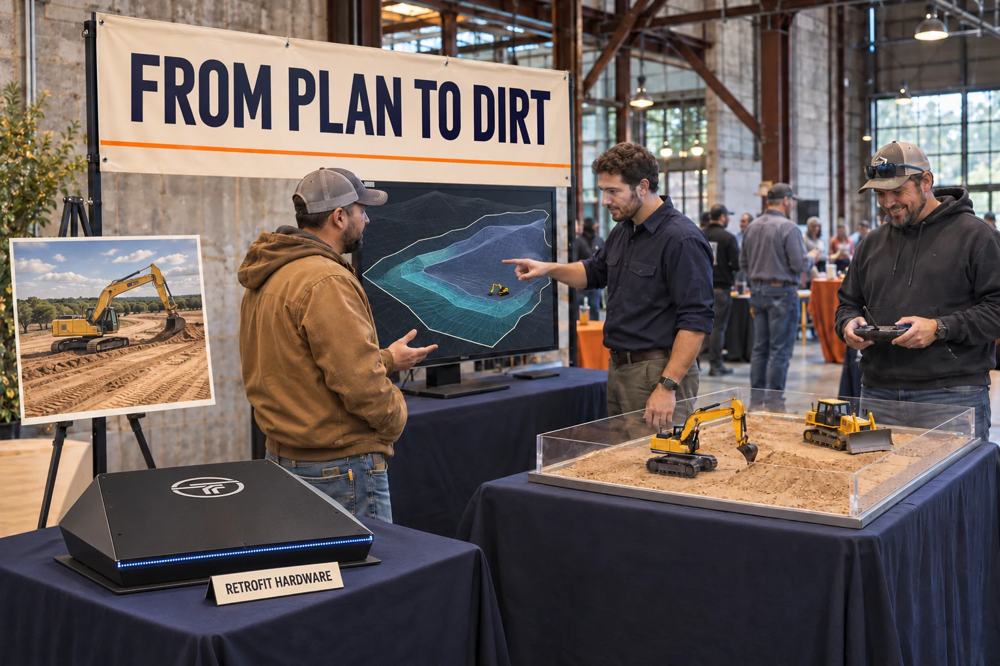

Distribution Hall
Before we book, Distribution Hall must give written approval for guests to operate the excavator with a TerraFirma coach. We’ll confirm insurance and any waivers before registration.

TerraFirma Playground in Austin
See how crews move dirt. Meet the people who do it.
At Distribution Hall, guests would take coached turns on a real excavator.
Before we book, Distribution Hall must give written approval for guests to operate the excavator with a TerraFirma coach. We’ll confirm insurance and any waivers before registration.
Robot Ranch in Buda is our first fallback if Distribution Hall says no. We’ll confirm the date, capacity, and crew.
Event plan
Try the excavator controls with a TerraFirma operator, ask about jobs, or bring a project to the team.

Watch the machine on the hall screen as the crew explains how the operator checks the ground against the plan. Then see the controls up close. If the machine can’t run live, the crew can show approved footage from the field.
Ask a recruiter which jobs fit your experience, or talk with a project lead about your site and schedule. The team plans to serve Texas barbecue bites and drinks.
Getting around
Check in at the Studio Warehouse. The demo is planned for the lawn.

Outdoor viewing rail
Guests can request a coached turn on the excavator. TerraFirma sets the number of turns after rehearsal. Everyone can watch from the rail or on the screen inside.
Hangar
Anyone can drop in to explore the equipment. A hosted tabletop station is planned, subject to equipment availability.
Beside the project desks
An engineer shows the hardware TerraFirma adds to heavy equipment, then explains how crews plan a grading job in Mission Planner and guide the machine with Mission Control.
Ten-minute tours start at 6:00 and 7:45 p.m. TerraFirma may also bring a tabletop excavator and dozer for guests to try by remote control.
See TerraFirma’s technology
One free ticket covers the exhibit, grading presentation and Q&A. Coached excavator turns have a separate sign-up once the venue clears guest operation and the crew confirms capacity.
Preview the RSVPPlace 5 × 7 in. table tents at guest tables. The cream-and-orange Keep Austin Building artwork pairs the Austin skyline with a QR code to TerraFirma’s site. Plan for 14 table tents and six spares.
The eight 24 × 36 in. boards mark Welcome, Check-in, Machine Demo, Meet the Crew, Careers, Project Desk, Fireside & Q&A, and Water & Restrooms. Confirm sign placement, arrows and QR links against the approved floor plan before printing.
The East Austin budget includes a $350 estimate for wayfinding and table tents within the $850 registration, queue, signage and décor allowance. The print quote is pending.
Production and staffing
Ten TerraFirma staff would run the event with vendor support.
30-minute program
The proposed guest-turn window is 5:10–6:10 p.m. At 6:20, the operator and controls engineer explain an eight-minute grading pass. They discuss a Texas project from 6:30 to 6:45, then take questions until 6:50. If weather or technical conditions stop the machine after booking, pause guest turns and run the indoor program with approved footage.
Estimated costs in US dollars
The one-day estimate is $39,330, including a $5,130 reserve. Vendor prices still need confirmation.
Fallback · 90 guests assumed
Plan coached guest turns on TerraFirma’s test pad. Confirm the operating setup, site capacity and crew before booking.
Recommended if approved · 200 guests
Cash baseline pending quotes and guest-operation repricing. Book only with written venue approval for coached attendee turns.
Expanded · 600 guest visits
The crew would use one machine and one setup. Before expanding, review the pilot results and get a quote for all three days.
Recruiters contact UT Austin, UATX and Texas A&M six weeks out. The four-week campaign pairs social posts with invitations to 65 companies.
The founder posts a LinkedIn invitation and a field video. Recruiters send workforce partners English and Spanish invitations and ask UATX’s Talent Network to invite Polaris students. They ask UT Austin’s Cockrell School and Texas A&M Employer Services to share job openings. Business development invites the first 25 companies.
Marketing shares an operator’s video on Instagram and Facebook. Recruiters follow up once with each school after 3–5 business days and ask Austin Community College’s Infrastructure Academy to introduce candidates for field jobs. Business development offers project appointments to 20 more companies.
Marketing features a Texas project on LinkedIn and in a captioned YouTube Short. The team asks Austin AGC and the Austin Contractors & Engineers Association about inviting members. Business development invites the final 20 companies and follows up with interested estimators and project leads.
Aim for 108 job candidates, 54 people with potential projects and 53 community guests. If a priority group falls below 90% of its target, its team has 48 hours to ask for introductions. Confirm appointments and send arrival details two days before the event.
Marketing sends email reminders and posts them to Instagram and Facebook Stories. The proposed cap of 285 free RSVPs assumes about 70% will attend. The door team uses a waitlist and follows the venue’s approved limit.
The ad budget allows $200 for LinkedIn and $300 for Meta’s Instagram and Facebook ads. Marketing checks which groups are signing up before spending more.
The project desk offers eight 15-minute appointments in advance. Hosts can open up to four more for walk-ups and referrals if time allows. They ask where the site is, what work it needs and when.
After the event
Follow up the next day. Use calls, hires and projects to decide whether to host another event.
East Austin attendance goal
200By day 14, the goal is for local audiences to see the event coverage 25,000 times.
Candidates for priority jobs
32Recruiters aim to meet 16 candidates for field jobs and 16 for technical jobs. Their goal is to book 13 calls within 14 days. They count interviews and hires after 30, 60 and 90 days.
Qualified project leads
12The project team aims to find local jobs that fit TerraFirma’s work, book six first calls within 14 days and agree on the scope of two projects within 30 days.